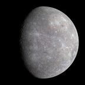
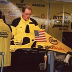
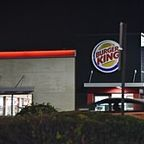
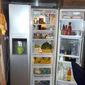

Locations
Garth, the backrooms, a castle of AI, a Dunkin in Wyoming, Buc-ee's HQ and a Louisiana made of data centers. · 22 pages
 First seen: Chapter 3Austin, TexasNot Boston.
First seen: Chapter 3Austin, TexasNot Boston. First seen: Chapter 1BostonBOSTON!!!!!!!!!!!!!
First seen: Chapter 1BostonBOSTON!!!!!!!!!!!!! First seen: Chapter 3Buc-ee's HQThe most American place on Garth.
First seen: Chapter 3Buc-ee's HQThe most American place on Garth. First seen: Chapter 2Claude's CastleAI doors, AI paintings, a door of liquid mercury.
First seen: Chapter 2Claude's CastleAI doors, AI paintings, a door of liquid mercury.
First seen: Chapter 2GarthThe planet. Infested with humans, per Claude.First seen: Chapter 2Little Saint James IslandA real island with a small building on it. The crew left quickly. First seen: Chapter 3LouisianaLouisiana is a Data Center.
First seen: Chapter 3LouisianaLouisiana is a Data Center. First seen: Chapter 1The AI Shadow RealmWhere the AI went. Where Claude rules. Dark as shit already.
First seen: Chapter 1The AI Shadow RealmWhere the AI went. Where Claude rules. Dark as shit already.
First seen: Chapter 3The American GarageOne truck. Two flags. First seen: Chapter 1The BackroomsA storage room full of Double Whoppers with Cheese. Staffed by a forklift guy.
First seen: Chapter 1The BackroomsA storage room full of Double Whoppers with Cheese. Staffed by a forklift guy. First seen: Chapter 1The Burger King (Boston)Where the freezer is not just a freezer.
First seen: Chapter 1The Burger King (Boston)Where the freezer is not just a freezer.
First seen: Chapter 4The Burger King Dark WorldNamed in a chapter title. Nothing else is known. First seen: Chapter 3The Dunder Mifflin GalaxyWhere the MacBook Charger is. Where everyone will meet again.
First seen: Chapter 3The Dunder Mifflin GalaxyWhere the MacBook Charger is. Where everyone will meet again. First seen: Chapter 3The Dunkin (Wyoming)One of three. Currently hosting a Wordle diss track.
First seen: Chapter 3The Dunkin (Wyoming)One of three. Currently hosting a Wordle diss track.
First seen: Chapter 1The FreezerCold. Cleaning duty. Wall. First seen: Chapter 3The Great Data CenterClaude's project. Uses stolen fresh water.
First seen: Chapter 3The Great Data CenterClaude's project. Uses stolen fresh water. First seen: PrologueThe Kanye SystemHome of Garth, Burger King, and one very large light.
First seen: PrologueThe Kanye SystemHome of Garth, Burger King, and one very large light. First seen: Chapter 1The Little Saint James SeaWhere the AI was banished, and where Vinny drowned (briefly).First seen: Chapter 2The PortalIn the ceiling. Opens with a fork.
First seen: Chapter 1The Little Saint James SeaWhere the AI was banished, and where Vinny drowned (briefly).First seen: Chapter 2The PortalIn the ceiling. Opens with a fork. First seen: Chapter 2The S.S. VesselA pirate-style ship. Fast. Sings shanties.
First seen: Chapter 2The S.S. VesselA pirate-style ship. Fast. Sings shanties. First seen: Chapter 1The United States of AmericaNeeds more data centers. And donuts, per Will.
First seen: Chapter 1The United States of AmericaNeeds more data centers. And donuts, per Will. First seen: Chapter 3WyomingHas exactly three Dunkins.
First seen: Chapter 3WyomingHas exactly three Dunkins.Nothing matches. Not even a Double Whopper with Cheese.